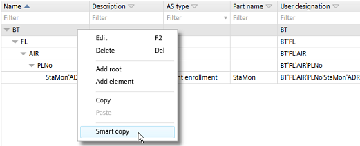
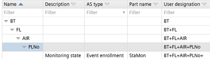

Changing user-specific user designations
Changing the level structure or separators in Settings > Naming defaults > User designation settings does not automatically change already engineered user designations. In order to change existing user designations, use the smart copy and paste functions.

Changes to the user designation settings are not displayed automatically in Advanced > User designation. Restart the project to refresh the view.
Change user-specific user designations
In the following example the separators are changed from ' to +.
- Open Advanced > User designation.
- Right-click the root element and select Smart copy.

- Open Microsoft Excel and paste the tree.
- In Settings > Naming defaults > User designation settings, make your changes to the user-specific user designation.
- When adding or removing levels, adapt the columns in Microsoft Excel accordingly.
- Copy the content from Microsoft Excel.
- In Advanced > User designation click Smart paste.
- Click Adjust.
- Click Save.
- Restart the project to refresh the view.
